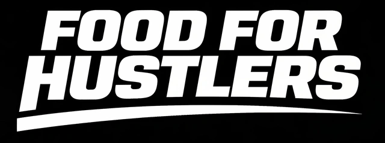
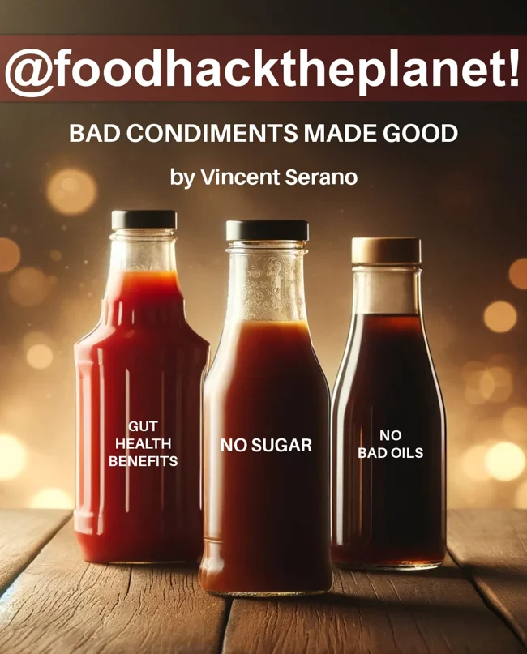
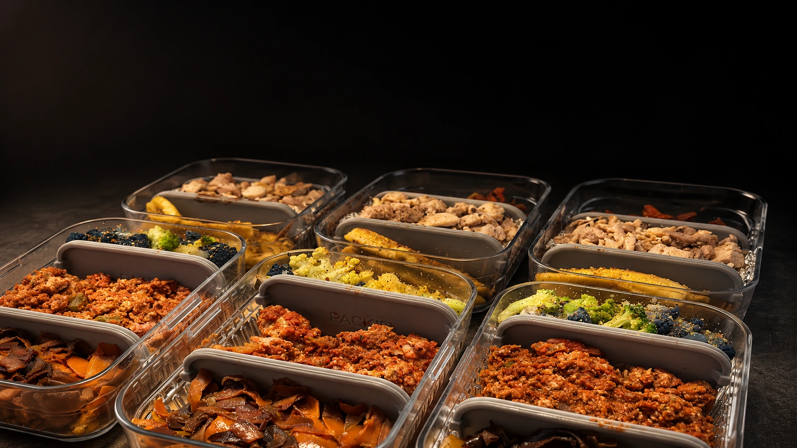
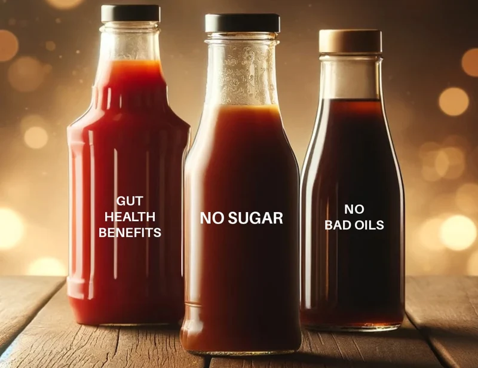

$249 / strategy call
LET’S FIND
YOUR BREAKDOWN.
- Review your current food routine
- Find exactly where it’s breaking
- Build a system that fits your life
- Leave with a clear plan in a Google Doc

Keep the food you love. Rethink the way you do it.

Your favorite sauces, dressings & taco spice, hacked with monk fruit. Better ingredients. Big flavor. Recipes worth repeating.
Free ebook by email.

FIX THE FOOD. THEN THE HABIT.
Find what breaks down—ingredients, prep, storage, or transport—and build around your actual day.

Pick a dressing you already enjoy. Change one ingredient at a time and keep the version you like.
THE FREE FOOD HACKING GUIDE
Rethink the ingredients in your everyday dressings and condiments with Bad Condiments Made Good by Vincent Serano.
Free ebook. Delivered by email.
YOUR NEXT MOVE
Start with a strategy call, then choose the support you need.
Hands-on support to turn the plan into a system you can actually stick with.
A complete food setup designed around the way you live, work, and move.
Built around unpredictable days in the entertainment industry, this approach adapts ingredients, prep, storage, and transport to your schedule.
Choose foods you enjoy and adjust their ingredients.
Identify the sticking point: shopping, prep, packing, or your schedule.
Track what works and adjust when your routine changes.
No. Start with the foods you enjoy, then rethink the ingredients and setup around them.
Get the free dressing and condiment guide. For a plan tailored to your routine. If you need more help, book the $249 Strategy Call.
We review your routine, identify where it breaks down, and put your plan in a Google Doc. The booking button starts with an intake form.
Food Hacker Training provides hands-on support. Premier Food Hacking covers a complete setup and ongoing refinement. Email hustle@foodforhustlers.com for options and pricing.
It covers ingredients, sourcing, prep, containers, transport, and the habits that keep it working.